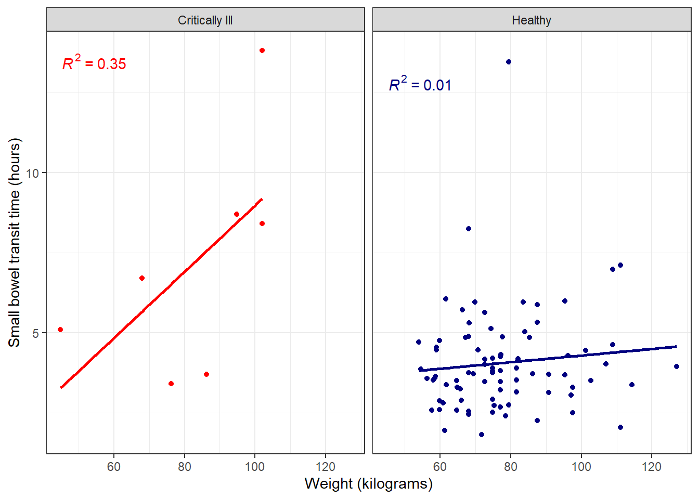
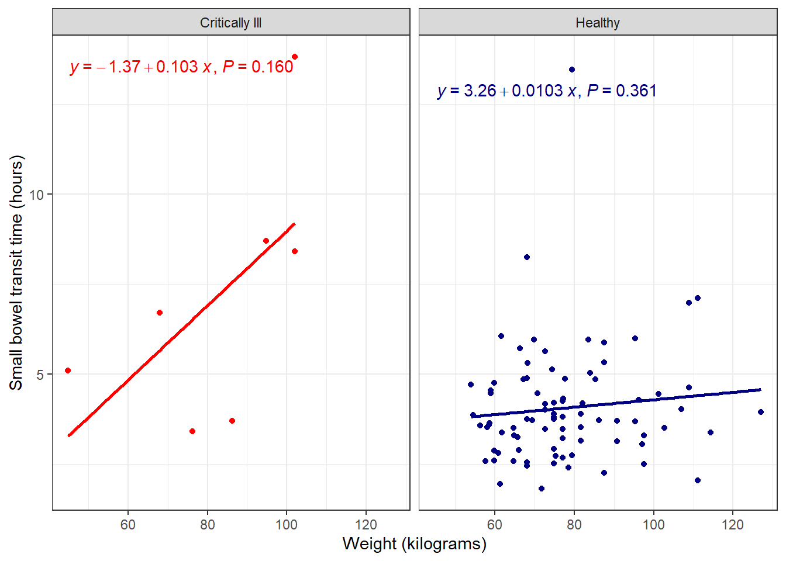
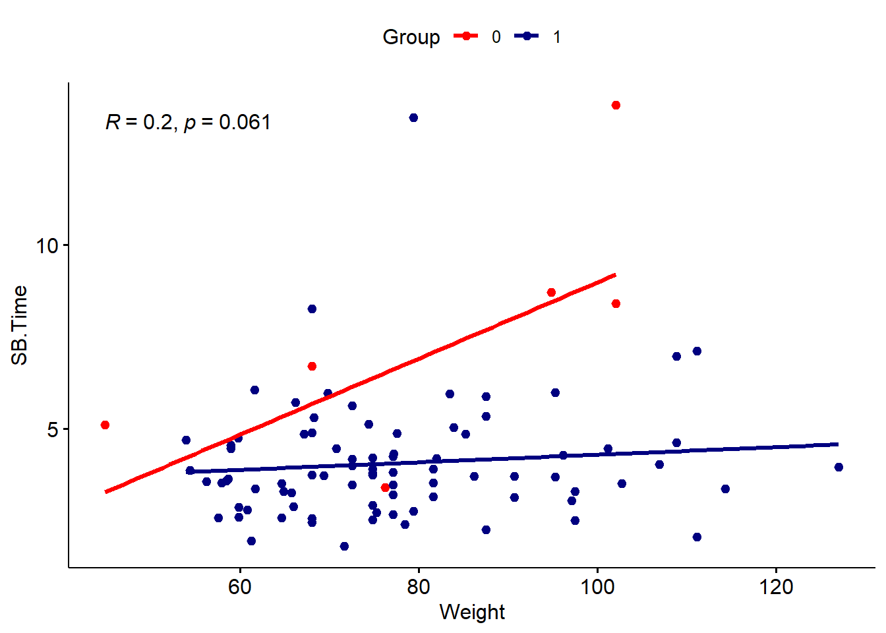
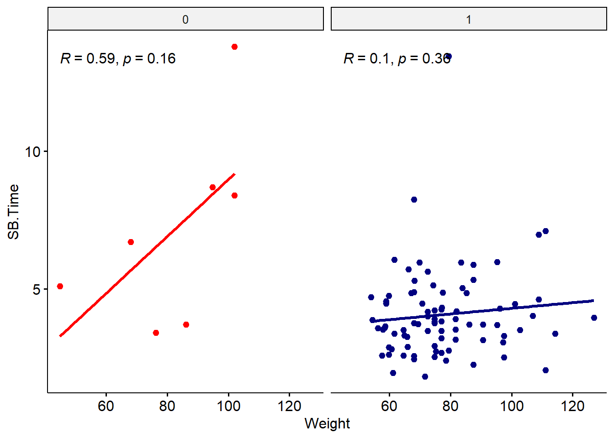
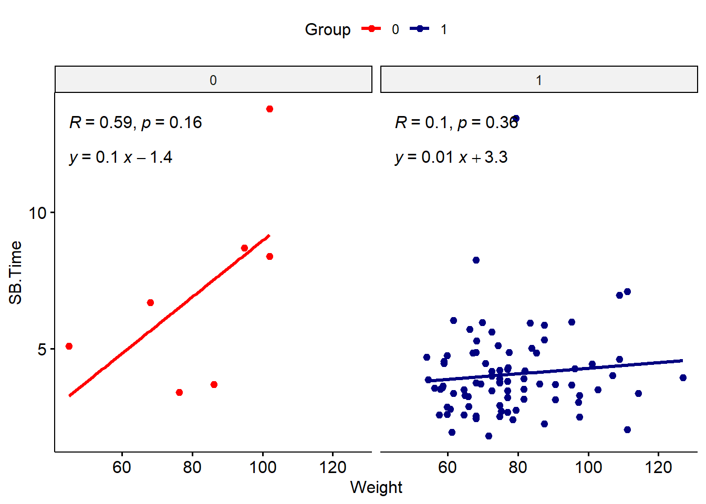

Create Statistical Plots
There are many R packages that can be used to plot statistical results. This section will briefly cover ggpmisc and ggpubr for labeling ggplot plots with statistical results (model coefficients, significance) of data in that plot.
ggpmisc
The ggpmisc package is an extension of ggplot2 for labeling plots with statistical results of data in the plot, for instance model equation or p-values.
#leaving in warnings to recognize some functions are overwritten
#if concerned, can always specify exact function by first indicating package
#for instance ggplot2:heightDetail.titleGrob to use the ggplot2 version of that same name function
library(ggpmisc)Loading required package: ggppRegistered S3 methods overwritten by 'ggpp':
method from
heightDetails.titleGrob ggplot2
widthDetails.titleGrob ggplot2
Attaching package: 'ggpp'The following object is masked from 'package:ggplot2':
annotateUse faceted scatterplot from prior section as base plot:
facet_plot <- ggplot(data = smartpill, aes(x = Weight, y = SB.Time, color = Group)) +
geom_point() +
labs(x = "Weight (kilograms)", y = "Small bowel transit time (hours)") +
scale_color_manual(values = c("red", "navy"),
breaks = c("0", "1"),
labels = c("Critically Ill", "Healthy"),
name = "Group") +
facet_wrap(~Group,
labeller = as_labeller(c("0" = "Critically Ill", "1" = "Healthy"))) +
theme_bw() +
theme(legend.position = "none")Fit line
Fit a polynomial (by default, a basic linear model using lm()) using the stat_poly_line() function.
facet_plot +
#fits lm by default, can be customized
#se = FALSE -> no shaded confidence interval, just line
stat_poly_line(se = FALSE)
Add function to plot
Then use the stat_poly_eq() function to add the R2 value to the plot.
facet_plot +
stat_poly_line(se = FALSE) +
stat_poly_eq()
Further customize with full model equation and more by specifying use_label() within stat_poly_eq().
facet_plot +
stat_poly_line(se = FALSE) +
#defaults include model equation and p-value
#can be changed as needed, many options
stat_poly_eq(use_label())
The ggpmisc user guide contains many more options for model equations, lines, and tables.
Save ggpmisc plot
Since this is a gg object, we can save it using the standard ggsave() function:
ggpmisc_plot <- facet_plot +
stat_poly_line(se = FALSE) +
stat_poly_eq(use_label())
ggsave(filename = "ggpmisc_plot.png", plot = ggpmisc_plot, height = 5, width = 7, units = "in")ggpubr
The ggpubr package is another extension package of ggplot2 for adding statistical results to ggplot plots.
library(ggpubr)Add line and function
Before, we added a trend line and model equation to our existing ggplot object, by adding additional functions from a new package. In the case of ggpubr, we can use this package’s functions, which recreate ggplot-style plots with additional options.
To recreate the faceted scatterplot, use the ggscatter() function, with associated add-ons from ggpubr.
ggscatter(data = smartpill, x = "Weight", y = "SB.Time", facet.by = "Group",
#color points
color = "Group", palette = c("red", "navy"),
#add regression line
add = "reg.line",
#remove confidence interval of regression line
conf.int = FALSE,
#add correlation coefficient
cor.coef = TRUE
)
Note that the syntax is a bit different from ggplot-style: variable names need to be in quotes, and arguments for color, etc. have different names. We’d need to do a bit more work to update labels and such. You can also do a mix-and-match approach using the ggpubr functions and ggplot2 functions for the same plot.
#use ggscatter to specify data and color and regression line
ggscatter(data = smartpill, x = "Weight", y = "SB.Time",
color = "Group", palette = c("red", "navy"),
add = "reg.line",
conf.int = FALSE,
cor.coef = TRUE
) +
#use facet_wrap from ggplot2 to make the facets by group
facet_wrap(~Group) +
#suppress legend
theme(legend.position = "none")
The regression equation can be added using stat_regline_equation().
ggscatter(data = smartpill, x = "Weight", y = "SB.Time",
color = "Group", palette = c("red", "navy"),
add = "reg.line",
conf.int = FALSE,
cor.coef = TRUE
) +
facet_wrap(~Group) +
#add regression equation
#move position so doesn't overlap with correlation values
#this may take some trial and error
stat_regline_equation(label.y = 12)
Save ggpubr plot
As usual, the plot can be saved using the ggsave() function:
ggpubr_plot <- ggscatter(data = smartpill, x = "Weight", y = "SB.Time",
color = "Group", palette = c("red", "navy"),
add = "reg.line",
conf.int = FALSE,
cor.coef = TRUE
) +
facet_wrap(~Group) +
stat_regline_equation(label.y = 12)
ggsave(filename = "ggpubr_plot.png", plot = ggpubr_plot, height = 5, width = 7, units = "in")Choosing a package
There are many more ggplot extension packages, many of which relate to adding statistical results or context to plots. Which package you choose will depend on your visualization needs and which statistical analysis you are doing. Most standard statistical tests will be included in ggpmisc or ggpubr, but for more complex analyses, you may need to expand your package search if these options do not include it. For instance, phylogenetic trees or survival analysis.
Additional resources
- ggpmisc website
- ggpubr website
- Many more ggplot extensions
- Also check out tidyplots, another good option for publication-ready plots. Includes many use cases with example code including plots suitable for bioinformatics (volcano plots, principal component, gene expression, correlation, etc.).